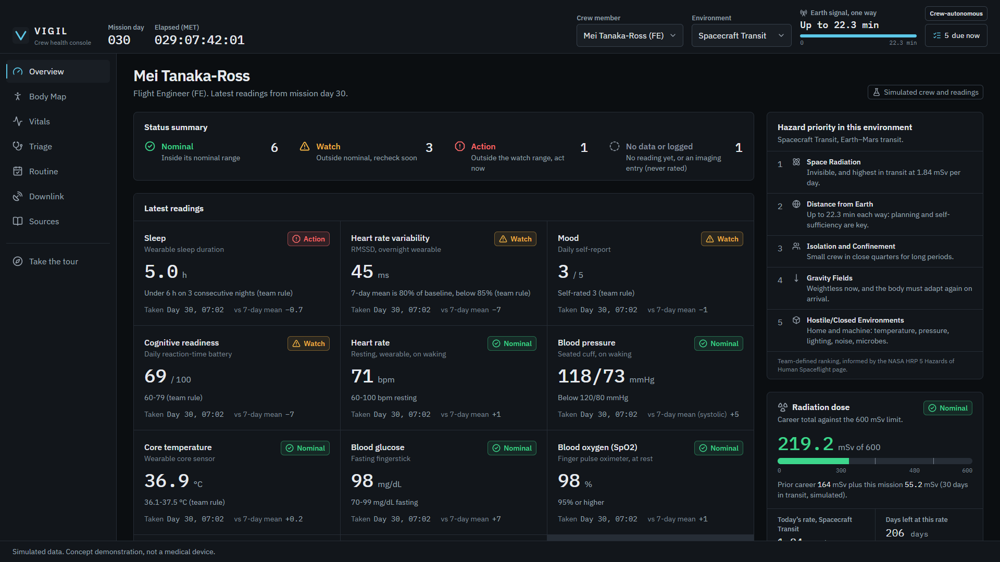
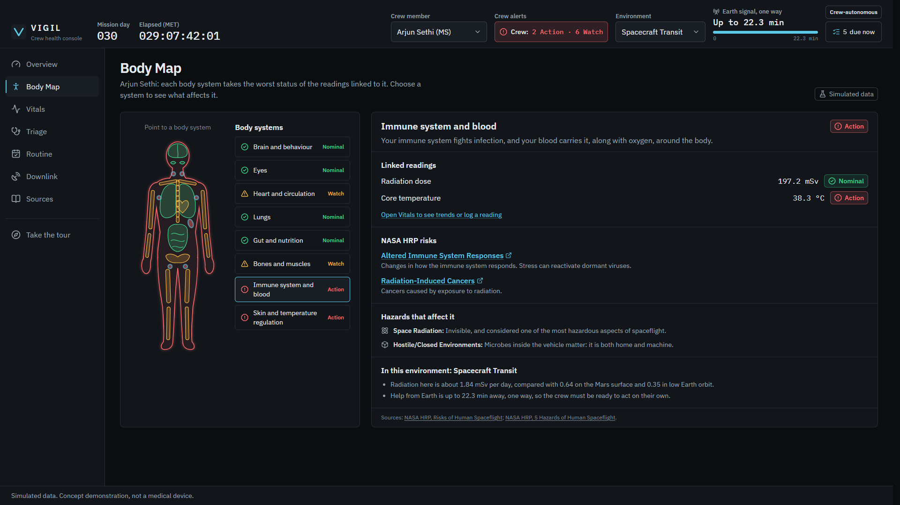
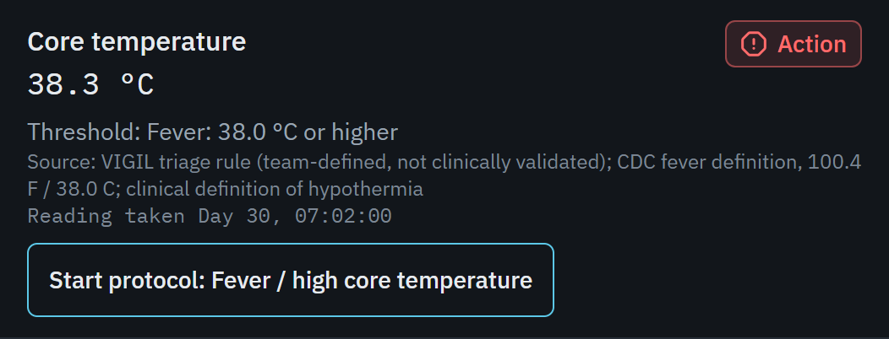
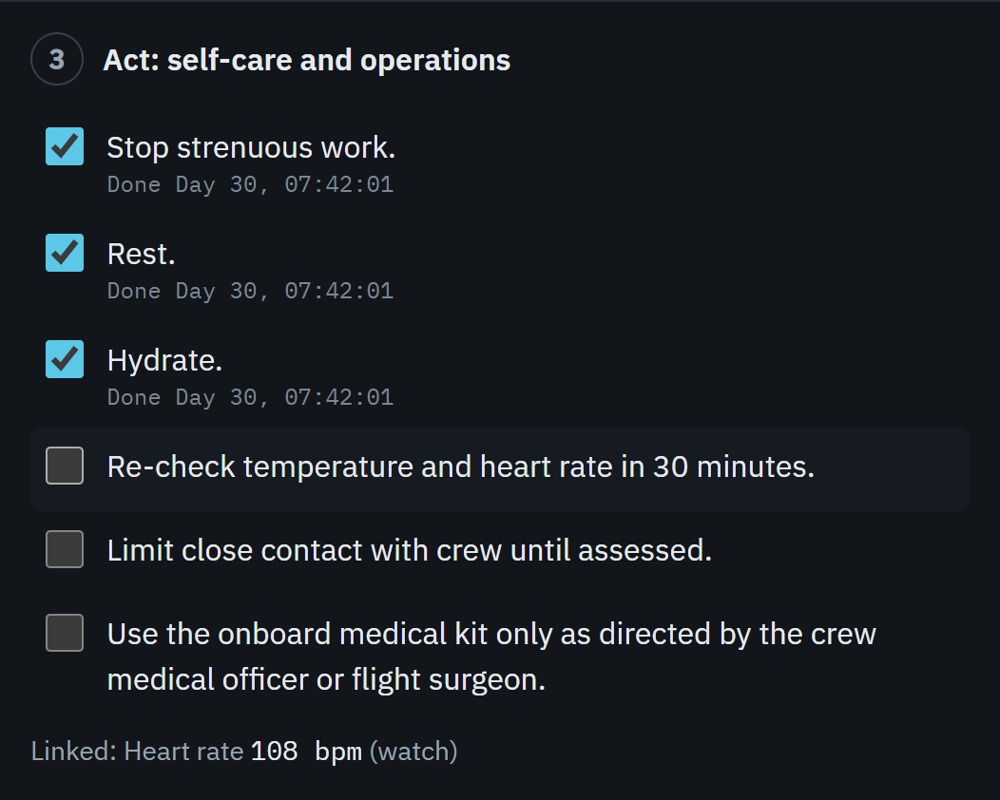
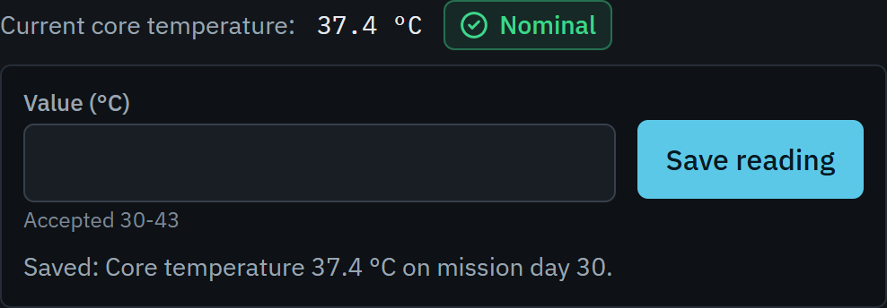
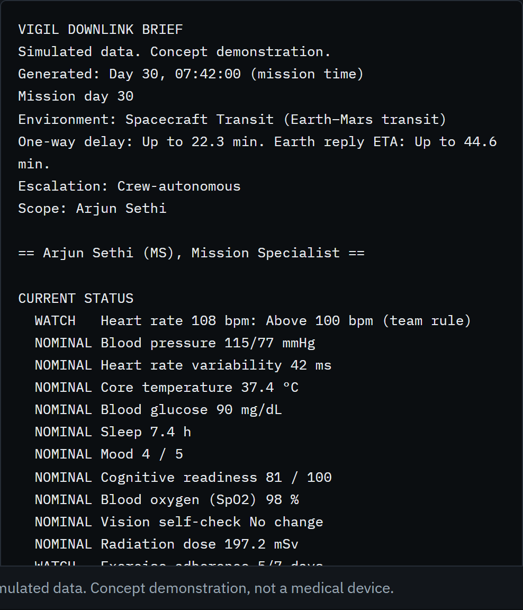
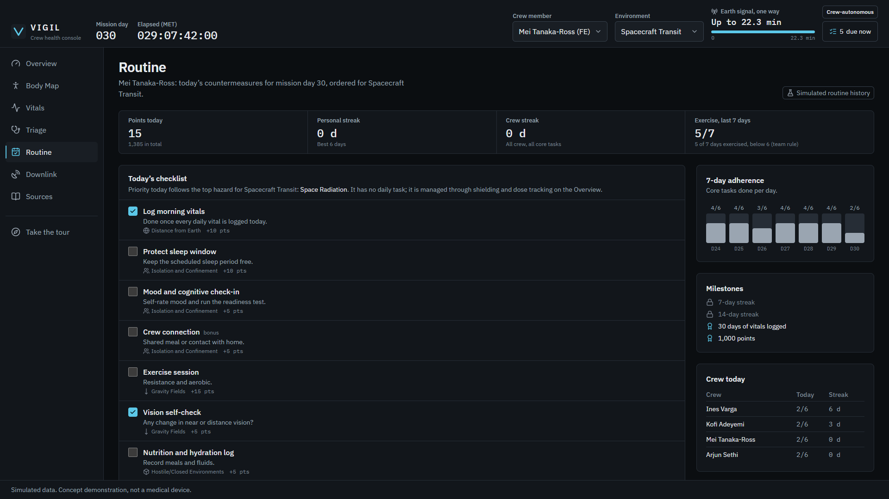
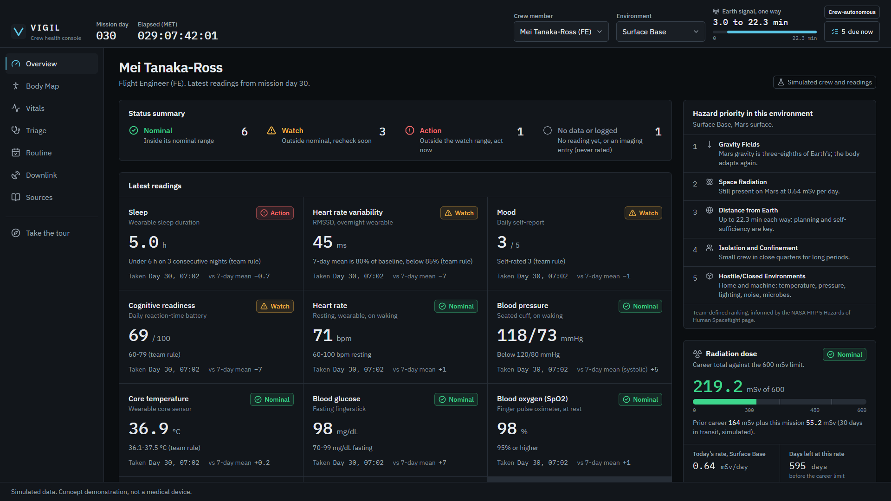

NASA Space Apps Challenge 2026
Health monitoring a crew can act on when Earth is minutes away.

Pandanauts
Challenge: Create Health Monitoring Software for Astronauts on Space Missions
vigil-pandas.vercel.app
The five hazards of human spaceflight (NASA HRP):
NASA HRP names a Risk of Inadequate Systems Operations Support.
Crews must be able to assess themselves.
1
What is my status?
Every reading rated nominal, watch or action.
2
Why does it matter here?
Body systems linked to NASA HRP risks and the current environment.
3
What do I do now?
A guided protocol, without waiting for Earth.





Orbit: ground-guided. Reply in under 2 s.
Mars: crew-autonomous first. Reply in up to 44.6 min.
5 Hazards, named Risks and ongoing research shape the hazard panel and Body Map.
1.84 mSv/day in cruise, 0.64 on the Mars surface.
Career limit 600 mSv. Solar particle event limit 250 mSv.
Neutrons are about 30% of ISS radiation; CANS spectrometer research.
AHA, ADA, CDC, WHO and AASM thresholds for vitals.
Gaps between published figures are labelled as VIGIL team rules.
Every threshold shows its source in the app.


vigil-pandas.vercel.app
github.com/Kuraam/vigil
Built with AI-assisted development (Claude). All crew data simulated.